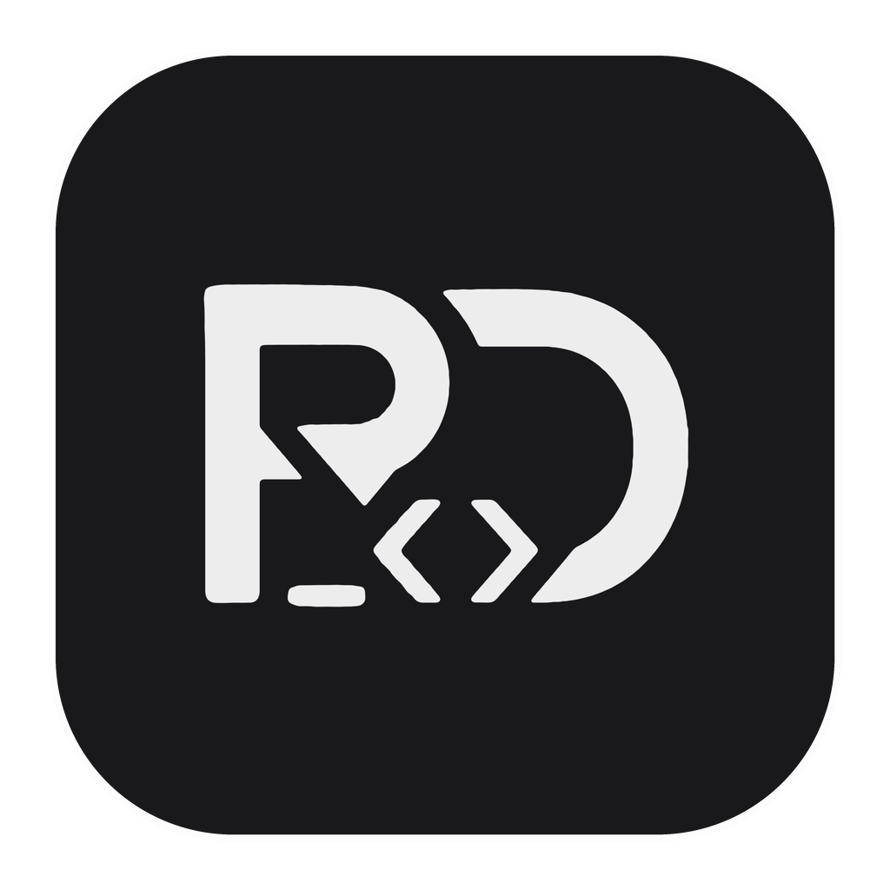

RickDev Presence Studio
Perfis
Perfil 1
Perfil 2
Perfil 3
Perfil 4
Perfil 5
Importar perfis
Exportar perfis
Nome do perfil
Limpar perfil
Presence
Modo de mídia
Aplicativo Discord
Application ID
*
Tipo de atividade
Jogando
Ouvindo
Assistindo
Competindo em
Na lista de membros
Nome do app
Detalhes
Estado
Textos
Detalhes
Estado
Variáveis
{hora}
{data}
{dia}
{perfil}
{música}
{artista}
Alternar textos
Detalhes 2
Estado 2
Detalhes 3
Estado 3
Detalhes 4
Estado 4
Trocar a cada
15 segundos
30 segundos
1 minuto
2 minutos
5 minutos
Imagens
Imagem grande
Texto da imagem grande
Imagem pequena
Texto da imagem pequena
Alternar imagens
Imagem grande 2
Imagem pequena 2
Imagem grande 3
Imagem pequena 3
Imagem grande 4
Imagem pequena 4
Trocar a cada
15 segundos
30 segundos
1 minuto
2 minutos
5 minutos
Botões
Botão 1
URL do botão 1
Botão 2
URL do botão 2
Mostrar cronômetro
Contar
Desde a ativação
Desde um horário
Regressivo até um horário
Horário
Alta prioridade
Modo de mídia
Buscar capa do álbum
Ícone do player
Mostrar como Jogando
Nome do player na atividade
Mídia discreta
Botão da música
Sem botão
Automático
YouTube Music
Spotify
Deezer
Apple Music
Fontes
Valem para todos os perfis
Preferências
Inicialização
Iniciar com o Windows
Ativar presence ao iniciar
Reconectar automaticamente
Ausente
Quando estiver ausente
Não mudar nada
Ocultar a presence
Mostrar o perfil 1
Mostrar o perfil 2
Mostrar o perfil 3
Mostrar o perfil 4
Mostrar o perfil 5
Considerar ausente após
5 minutos
10 minutos
15 minutos
30 minutos
1 hora
Automação
Adicionar regra
Nova versão disponível
Atualização do RickDev Presence Studio
Preparando o download
Agora não
Abrir no GitHub
Atualizar agora